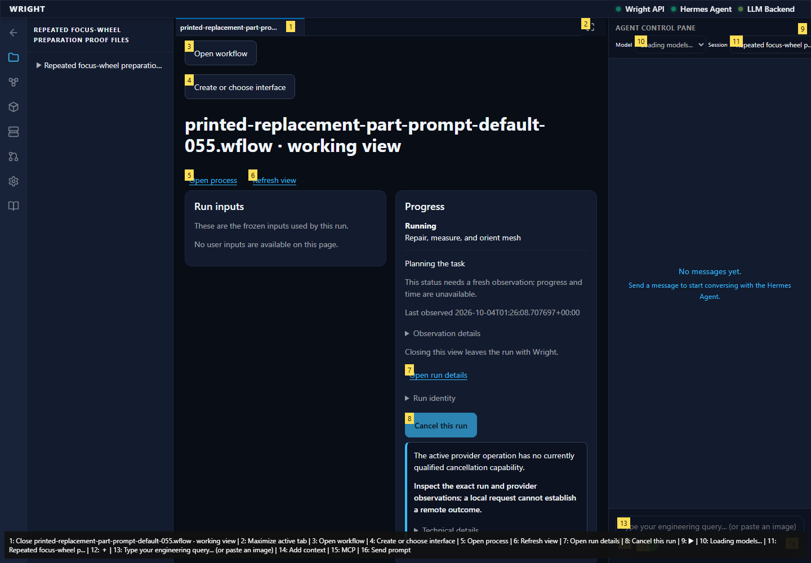
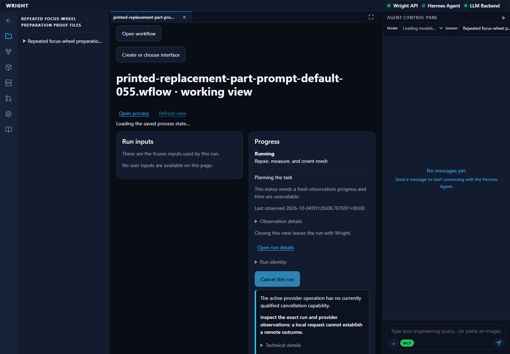
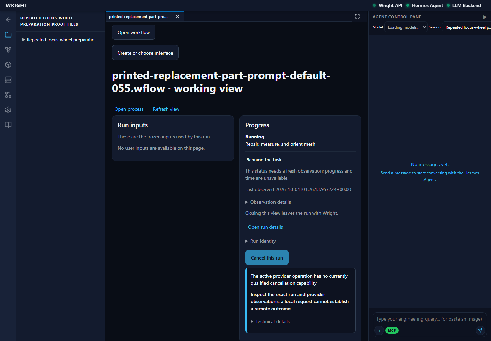

Fresh continuation after correcting the collector. The common view and actual backend response agree on the exact original-input digital run. Refresh/reload read its durable state without generation, execution, review or replay. Public common start remains separate.
pass
The corrected collector and common view agree on the accepted running run with 2 actual outputs; no generated UI is mounted.
Expected: Actual owning run response and progress without generated UI
Actual: The corrected collector and common view agree on the accepted running run with 2 actual outputs; no generated UI is mounted.

Refresh reads the same running run and 2 outputs. It does not start, approve or resume work.
Expected: Same source/run readback without another execution
Actual: Refresh reads the same running run and 2 outputs. It does not start, approve or resume work.

The common working tab restores the exact run after reload.
Expected: Same backend-owned run; no generated UI or replay
Actual: The common working tab restores the exact run after reload.
